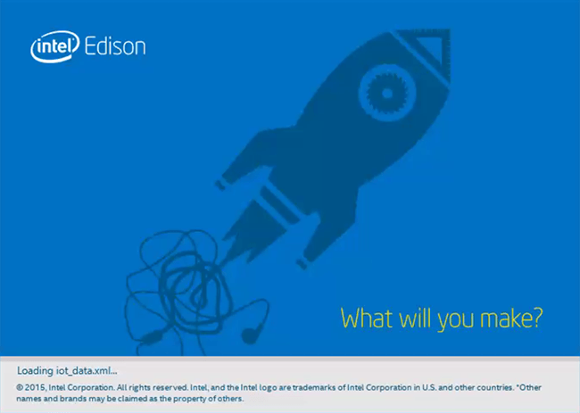
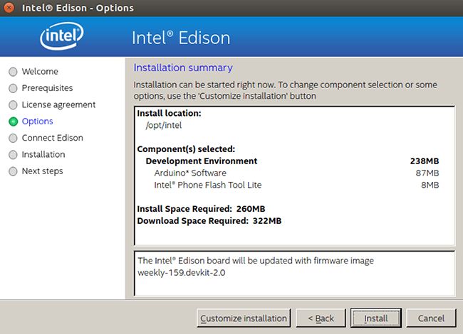
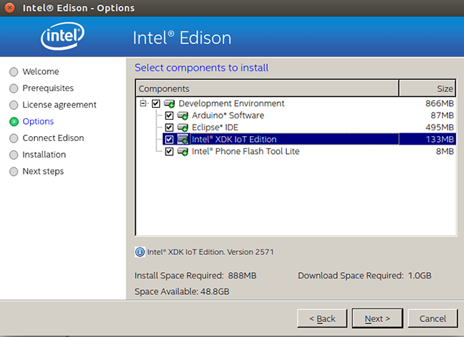
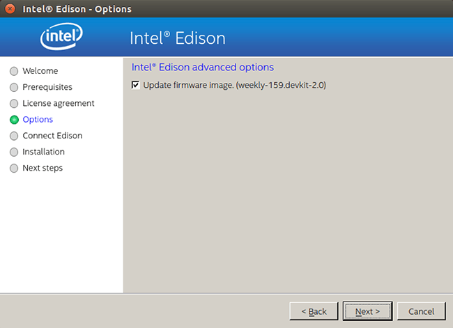
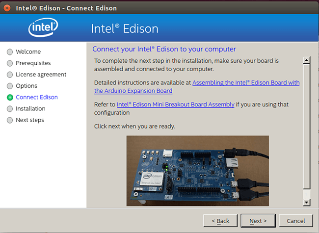
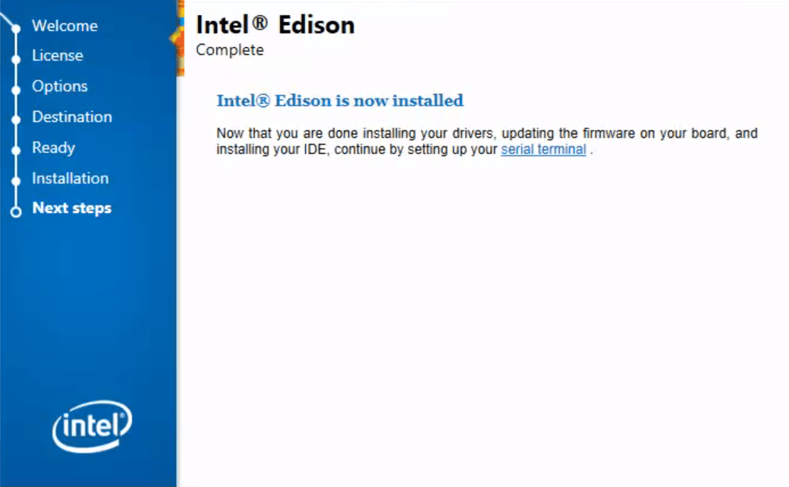

-
Get the latest Intel® IoT DevKit offline installer files.
- On the USB key: downloads
- Copy the entire Linux folder to your computer
-
When the file transfer is complete, go into the Linux folder you copied to your development machine.
-
Extract l_iot_dev_kit_[version].tar.gz to the same directory.
-
Go into the extracted folder l_iot_dev_kit_[version].
-
Launch install.sh to start the installer.

-
Follow the installation wizard prompts. Click Next where needed.
-
When you reach the “Installation Summary” screen, click Customize installation.

-
Click Next on the “Choose a destination folder” screen.

-
On the “Select components to install” screen, select one or more of the IDEs to install:
- Arduino™ Software – for simplified C++ development
- Eclipse™ IDE – for C/C++ development
- Intel® XDK IoT Edition – for JavaScript / NodeJS development
Leave the last option selected:
- Intel® Phone Flash Tool Lite – installs tool to flash Intel® Edison firmware
WARNING: If you have a previous version of an IDE installed, it will be replaced.
Click Next.

-
On the “Intel® Edison advanced options” screen, leave “Update firmware image” selected to flash the latest firmware image directly on your Intel® Edison .

-
When prompted, connect the device mode and UART/serial cables to your computer, along with powering the board using DC power.

Click Next when ready.
If the Next button is greyed out, wait one minute for the Intel® Edison to finish booting up.
-
Follow the instructions for the Phone Flash Tool Lite installer when it appears, and click Continue or Install when prompted.
-
The entire flashing process may take up to 5-6 minutes. When done, click Finish to close the installation wizard.
